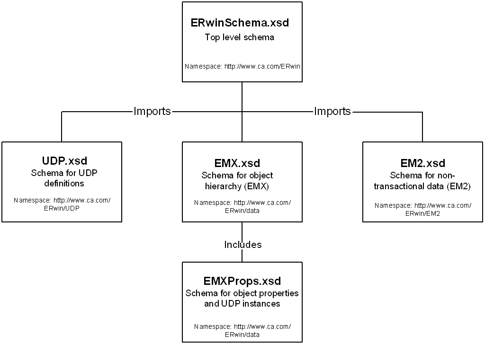

You can use the XML schema provided with this product to view metadata descriptions.
An XML schema is a document or a set of documents that defines the XML file's structure and legal elements. XML schemas can be used to ensure that an XML file is syntactically correct and conforms to the defined schema. erwin DM provides such a schema and uses the schema to validate XML files when they are opened in the tool.
The erwin DM installation places the complete set of XML schema files necessary for an XML file validation into the \Doc directory. The schema files have .xsd extensions and are described in the following list:
XML schemas contain descriptions of model object and property classes and define property containment by object classes. Schema definitions for EMX and EM2 classes are provided. XML schemas do not include deprecated classes.
The following diagram illustrates the five erwin DM XML schema files:

The schema files under the \Doc directory are not database-specific and represent the entire erwin DM metamodel. The schema contains all possible objects and properties for all valid database targets. If you need database-specific schema, those files are located in the Doc\DBMS_schemas directory. Within the Doc\DBMS_schemas directory, there is a folder for each supported target database. The database-specific schema files are stored in that folder and only consist of objects and properties that are valid for the given database target.
The XML schema that is in the \Doc directory is always used by erwin DM to validate an XML file; the database-specific schema is not used. The database-specific schemas are provided for documentation purposes and to assist third-party tool integrators to determine the valid objects and properties for a given database target. An external XML validation tool can be used to validate an XML file against a database-specific schema.